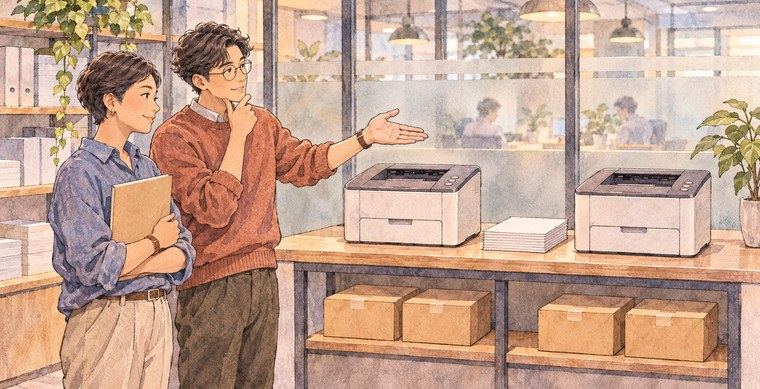

ECO-15 · 香港 · 10–15分钟 · 互补品 · 随使用量变化的成本 · 系统定价
打印机更便宜，打印反而更贵？

香港的一个历史实例
2006年4月13日，香港消费者委员会报告称，受测打印机的耗材和电费成本差异很大，其整体性能评分并未计入机器或耗材的价格。这个历史实例提醒我们，要看整套打印方案的成本；它不是对当前产品的比较。
下文的机器、供应商、合同和办公室打印量均为本案例虚构。不推荐任何真实品牌，计算也不采用任何历史价格或耗材打印量数据。
课堂决策
香港一家虚构的专业服务企业需要为一间小办公室购置打印机。这次决策只考虑一年内必要的黑白文档打印，初步计划打印4,000面。经理要在两套方案中选一套：A的机器售价为800港元，兼容耗材每打印面0.30港元；B的机器售价为2,000港元，兼容耗材每打印面0.10港元。一面就是一页打印内容；一张纸双面打印算两面。
两套方案都符合相同的质量、速度、容量、安全和服务要求，也都在预算内。虚构的一年期供货协议保证上述耗材费率，补充耗材以及清洁、初始化所用的耗材均已计入，按实际打印面数收费。没有免费打印面数、最低用量、按整盒购买耗材导致的取整、订阅费或解约罚金。年内费率不随打印量变化。案例特意采用这种按量计费的安排，让成本可以精确计算，而不是根据厂商标示的单盒耗材打印量来估算。
两套方案的纸张、电费、人工时间、维护及其他所有成本都相同。一年后机器的残值也相同，融资、税收和折现均无相关差异。两台机器都不会带来额外的文档需求，不必要的打印也不算收益。经理只比较有差异的成本：机器加兼容耗材。目前尚未购买任何设备，也没有已经沉没的切换或迁移成本。
| 一年期比较 | A | B |
|---|
| 机器价格 | HK$800 | HK$2,000 |
| 每打印面耗材成本 | HK$0.30 | HK$0.10 |
| 初步计划打印量 | 4,000面 | 4,000面 |
| 质量、容量及其他成本 | 相同 | 相同 |
你的决策按初步计划打印4,000面，你会选哪套方案？请列出机器加耗材的成本比较，并说明为什么只看机器价格或每面费率都不能作出决定。
第二轮 · 多了一项资料
下单前，企业确认两间独立的办公室各需要一台打印机。两间办公室都没有可用的现有机器，也不能共用一台。相同的机器价格、费率和条件分别适用于两间办公室。没有批量折扣，没有可合并使用的打印额度；选用不同方案也不会带来培训收益或额外成本。
第一间办公室已批准的文档计划要求全年打印2,000面，第二间办公室的计划要求打印10,000面。这些是给定的计划用量，并不是说去年的平均用量能预测未来需求。两套方案都能轻松满足任一办公室的打印需求，且每间办公室的预算都足以选用任一方案。现在还没购买，经理可以给一间选A，给另一间选B。
企业负责人希望你分别为两间办公室提出建议，并给出一条规则：如果下单前计划打印量有变，该如何重新审视选择？不要把两间办公室的用量取平均，当成一台机器的用量，也不要为了证明较高的购机价划算而多打印。购机后如果要换机，必须重新比较可避免成本；这里的规则只适用于首次购买。
你的决策现在你会为每间办公室选哪套方案？请找出首次购买时两套方案成本相同的打印面数，并说明预期用量变化会怎样影响你的建议。
买的是整套打印系统，不能只看哪个部件最便宜
打印机和与之兼容的耗材是互补投入品：办公室要打印，两者缺一不可。因此，机器便宜，后续持续采购的耗材却可能更贵。仅凭这一点，不能认定存在欺骗性定价、市场势力或超额利润。案例没有给出供应商的成本和利润率，但交易条款是明确的。
先看初步计划打印量
打印4,000面时，A的成本为800港元 + 0.30港元 × 4,000 = 2,000港元；B的成本为2,000港元 + 0.10港元 × 4,000 = 2,400港元。按给定的一年期假设，A便宜400港元。B每面省下的耗材费还不足以抵消多出的1,200港元购机成本。
不同用户可能适合不同方案
打印2,000面时，A的成本为1,400港元，B为2,200港元：选A，省800港元。打印10,000面时，A的成本为3,800港元，B为3,000港元：选B，省800港元。两间办公室分别选用不同方案，合计4,400港元；都买A要5,200港元，都买B也要5,200港元。两种统一采购方案的总成本虽然相同，却都不如按各办公室的用量搭配方案省钱。
找成本交点，而不是找一个永远占优的方案
B的购机成本高出1,200港元，但每打印一面可节省0.20港元。1,200港元 ÷ 0.20港元 = 6,000面。达到这个用量时，两套方案的成本都是2,600港元。按本案例的假设，低于6,000面选A，高于6,000面选B，正好6,000面则两者持平。这是首次购机的一年期成本分界点，不是盈亏平衡点，也不是建议增加打印量。
这里的需求是怎样相互关联的
兼容耗材的需求取决于机器的使用量，而采购前对耗材价格的预期，也会影响买家想选哪台机器。因此，即使两台机器的价格都不变，计划打印量一变，首次购机的首选也可能变。实际采购还要核查耗材可打印量、随机器附带的耗材、维护、质量、使用寿命和残值。案例把其他成本设为相同，并采用按量计费，是为了单独看互补品定价如何影响选择，并不是说所有实际销售的打印机都符合这些条件。
教师说明
先让学生完成4,000面的成本比较，再公布两间办公室各自的打印量。请学生解释：既然每间办公室都需要一台独立的机器，而且选用不同方案不增加成本，为什么不应把用量合并或取平均？要求学生算出6,000面的成本分界点，并区分首次购买与购机成本已经沉没后的换机决策。不要仅凭这两份报价推断需求弹性、厂商利润、掠夺性定价、锁定效应，或认定报价会导致打印量上升。案例既未给出概率分布，也未保证未来打印量。若用量变得不确定，应在成本交点附近检验可信的情景，而不是凭空编造概率来计算期望值。
第二轮
下单前，企业确认两间独立的办公室各需要一台打印机。两间办公室都没有可用的现有机器，也不能共用一台。相同的机器价格、费率和条件分别适用于两间办公室。没有批量折扣，没有可合并使用的打印额度；选用不同方案也不会带来培训收益或额外成本。
第一间办公室已批准的文档计划要求全年打印2,000面，第二间办公室的计划要求打印10,000面。这些是给定的计划用量，并不是说去年的平均用量能预测未来需求。两套方案都能轻松满足任一办公室的打印需求，且每间办公室的预算都足以选用任一方案。现在还没购买，经理可以给一间选A，给另一间选B。
企业负责人希望你分别为两间办公室提出建议，并给出一条规则：如果下单前计划打印量有变，该如何重新审视选择？不要把两间办公室的用量取平均，当成一台机器的用量，也不要为了证明较高的购机价划算而多打印。购机后如果要换机，必须重新比较可避免成本；这里的规则只适用于首次购买。
你的决策现在你会为每间办公室选哪套方案？请找出首次购买时两套方案成本相同的打印面数，并说明预期用量变化会怎样影响你的建议。